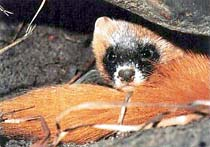
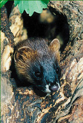

|
  Click here for a larger photo |
Exterior
Small animal with prolate flexible and slender body, short legs, and long furry tail. The length of the body (excluding tail): 25-39 cm, tail: 13-18 cm. The head is edgy, somewhat oblong. The ears are wide, round, slightly obtrusive out of fur. Coloration of the fur is tawny. It brightens up during winter. Geographical Living Areas In Russia: most of the Siberia except the northern regions near Polar Circle, Volga-Kama region, Komi region, Far East. Living Kolinsky Sable lives in taiga and forest-prairie regions. It likes river valleys and lake coasts with many fallen trees, quagmires with many hillocks and thickets of willow and reed. Kolinsky Sable eats gnawers (water rats, voles, mouses, hackees, jerboas, sometimes ground-squirrels), tree-creepers, more rarely: birds and frogs. It often eats nuts and different berries. Kolinsky Sable is usually active at night but sometimes hunts also in the day time. It moves by jumping, is able to climb trees. It lives in holes under the roots of trees, under stones, and often uses homes which other animals have forsaken. Mating
Molt
|
|
|
In
preparation for this page we have used the information from an excellent
resource about Siberian and Far East nature and against environmental degradation:
ZovTaigi.ru
(unfortunately, available only in Russian at this time).
We are currently thinking about ways to support the Kolinsky sable population in Russia. |
{kind=link}